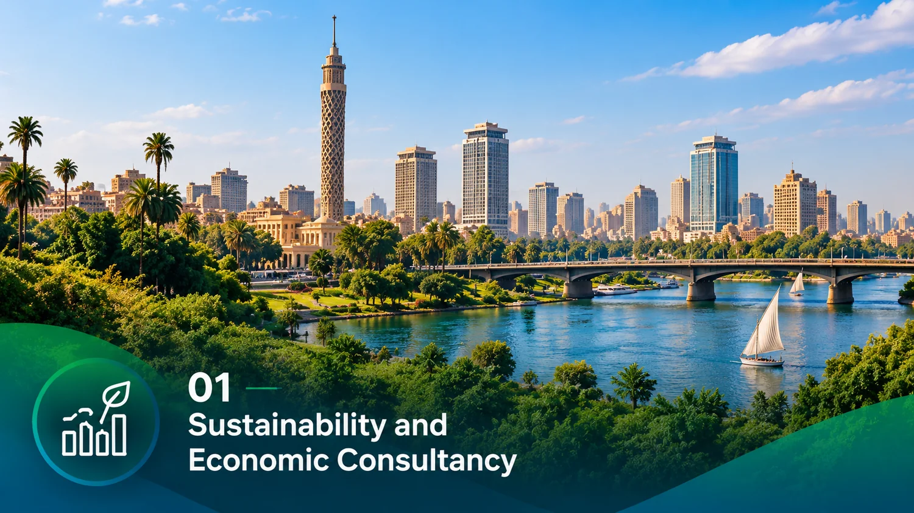
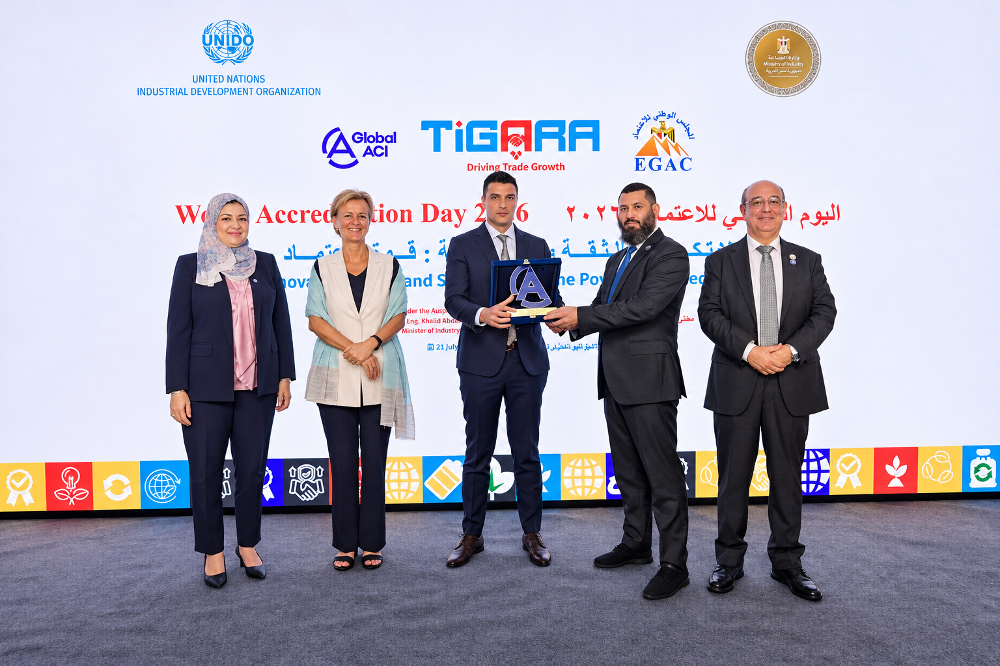
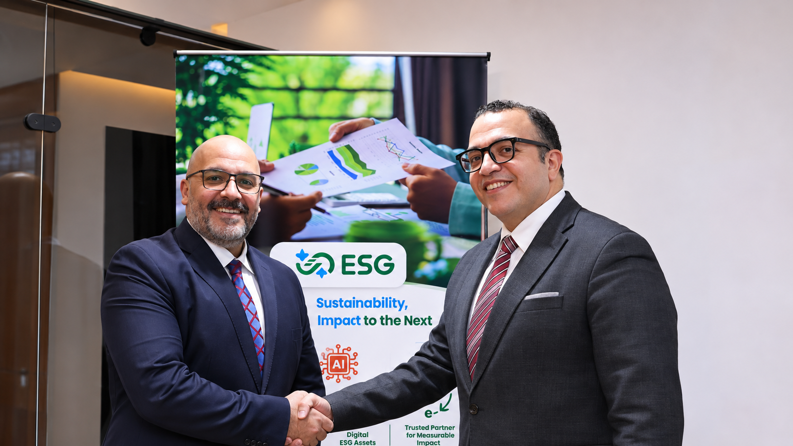
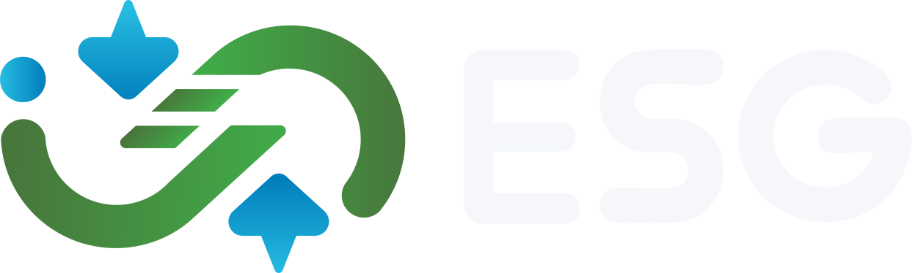
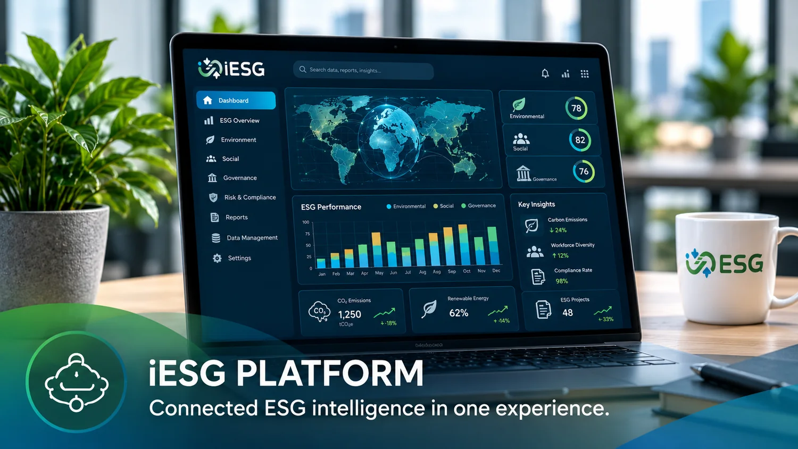

استشارات الاستدامة والاقتصاد
استراتيجية الاستدامة والتحليل الاقتصادي وأثر السياسات ودمج ESG للشركات والمؤسسات المالية.
استكشف الخدمة →إعادة تعريف الاستدامة، وتعظيم الأثر إلى المستوى التالي
شريك استراتيجي يجمع بين خبرة ESG والتكنولوجيا المتقدمة لتحويل الطموح إلى قرارات وخرائط طريق وأثر قابل للقياس.


الخدمات
تبدأ الرحلة من الاستراتيجية وتمتد إلى التقارير والكربون والتقييم والذكاء الاصطناعي والتنفيذ.
الأهداف العالمية
اسحب بالماوس أو مرّر بإصبعين على لوحة اللمس للتنقل بين الأهداف، ثم اضغط على أي هدف لفتح بياناته الكاملة.
شركاؤنا
شبكة من المؤسسات والشركات في قطاعات التمويل والتأمين والصناعة والزراعة والتعليم والثقافة.
التعاونات
ورش عمل، تحليل بيانات، استشارات قطاعية، وتعاون عملي من الاستراتيجية حتى التقارير.
منهج iESG
منهج متكامل يربط الاستراتيجية بالتنفيذ والقياس، ويحوّل الاستدامة إلى قرارات عملية وقيمة قابلة للإثبات.

منصة iESG
منصة تجمع المعرفة والبيانات والتحليلات وأدوات المتابعة لدعم قرارات الاستدامة والتقارير.

لديك تحدٍ أو مشروع في الاستدامة؟